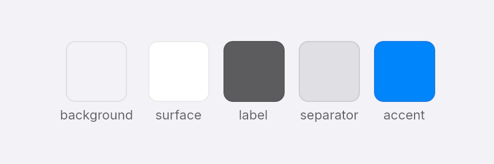
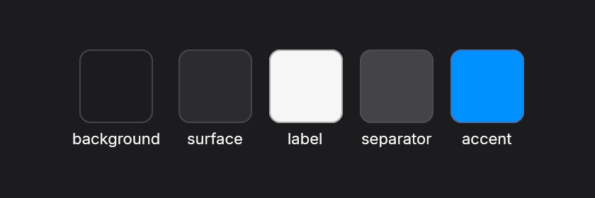

Theme and accessibility
view receives a Theme. Take colors from it and your UI follows light and dark mode, Reduce Transparency, and whether the window has focus.
Colors
background, surface, label, secondary_label, separator, accent and on_accent change with the appearance. For a color of your own, theme.pick(light, dark) returns the first value in light mode and the second in dark mode.


fn theme_palette(theme: &Theme) -> Element<Msg> {
let swatch = |name: &str, color: Color| {
column()
.items_center()
.gap_1()
.child(div().w(52.0).h(52.0).rounded_lg().bg(color).border(1.0, theme.separator()))
.child(text(name.to_string()).text_xs())
};
row()
.gap_3()
.child(swatch("background", theme.background()))
.child(swatch("surface", theme.surface()))
.child(swatch("label", theme.label()))
.child(swatch("separator", theme.separator()))
.child(swatch("accent", theme.accent()))
}column().bg_gradient(
theme.pick(Color::hex(0xffd6a5), Color::hex(0x2b2d42)),
theme.pick(Color::hex(0xbde0fe), Color::hex(0x14213d)),
)Window settings
Settings chooses the window's size and starting look. By default everything follows the system.
run(
app,
Settings::new("Photos")
.size(900.0, 600.0)
.appearance(Appearance::Dark)
.glass_level(0.5),
)appearance: light or dark. The default follows the system and its changes.glass_level: 0 is clear glass, 0.5 matches the macOS default, 1 is tinted.reduce_transparency: draws solid surfaces instead of glass. The default follows the system setting on macOS, read when the window opens. Other systems are not read yet.system_fonts: also loads installed fonts.
Glass without focus
As on macOS, glass in a window that has lost focus is frosted more, and prominent buttons lose their color. theme.focused tells you which state you are in.
Accessibility
Every element is in the accessibility tree that AccessKit hands to VoiceOver, Narrator and Orca, with its role, name and bounds. Buttons can be pressed and text fields edited from the screen reader, and keyboard focus is shared with it. Tab and Shift-Tab move focus between controls, and Space or Return presses the focused one.
Two things are yours to do:
- Name controls that have no visible text. Icon buttons, switches, sliders and text fields need
label, because the screen reader has nothing else to say. - Give elements in a list a
key. Embun keeps hover, press and focus state by key, so state stays with the right row when the list changes.
icon_button("+").on_press(Msg::Add).label("Add photo")The screen reader support has not been tested with VoiceOver, Narrator or Orca on a real device yet.